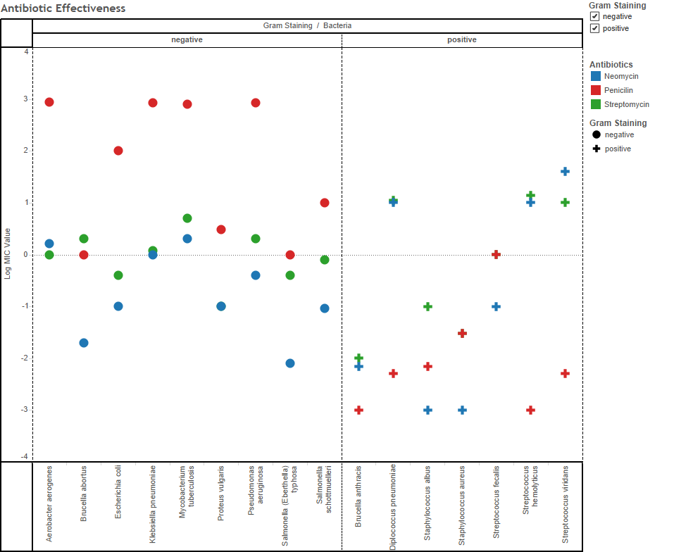

Projects for INFX 598:
Interactive Information Visualization
Assignment 2: Exploratory Data Analysis
The initial question I posed was to find out which are the safe states to live in the United States of America, so I decided to see if I get can answer this question by understanding the murder trend.
I initially extracted the data containing the murder count for all the 50 states for the year 2012.
Below is my first graph-a histogram-which has been plotted for all the states on the x-axis against the count of murders on the y-axis.
Interpretation:
Every bar represents a state and every state has a distinct colour.Inference:
California tops the list with the most number of murders followed by Texas and Florida with Wyoming and Vermont as the states with the lowest murders.But this graph simply gave us the basic idea of how many murders took place in a particular state without considering other factors like area size or population so I further decided to drill down in the data.
Next I decided to understand what changes when I include other factors such as population into the picture. I created a murder ratio index to calculate how many deaths occur per 100000 people in a particular state. Just having murder number doesn’t define how safe a state is but this gives a better picture. Below is the graph plotted for the murder ratio index against the population (for the entire state). I also included a box and whisker plot to see the median and the range of the death ratio. California and Texas which actually have the highest deaths actually fall in the median range with DC having the highest death ratio.
Interpretation:
Size represents the state population and colour represents the different states.Inference:
DC has more deaths per 100000 people as compared to any other state and quite a few states fall under within the 25% and 75% quartiles.
Next I also wanted to analyse if there are any other trend with respect to position on the map so I plotted all the states on the map along with the murder index per 100000 people.
Interpretation:
Location on the map represents actual location of the state and colour is the distinguishing factor between states.Inference:
A very interesting trend followed this visualization. States along the south border had a much higher murder ratio as compared to northern states. Almost all states along the south border had a ratio above 5 as compared to 2 in the northern states.
I further decided to see if there is some trend with where people stay in a particular state, so I split the population into metropolitan population and non-metropolitan population based on the counties they live in. Below I have 2 additional graphs created- Graph 1 has Metro murder ratio (per 100000) plotted against the metropolitan population and Graph 2 has Non-metro murder ratio plotted against non-metro population and these 2 graphs have been compared to Overall state murder ratio vs total state population.
Interpretation:
All the 3 graphs are connected to each other and selecting a state in any one of the graph will filter that state in the other 2 graphs too. The ratio axis are synced to each other so position is a direct comparison.Inference:
There are many states which are actually much safer in the non-metro areas and others are safe in the metro areas. This relation can help in making a safe decision!!Finally I also wanted to include a 4th dimension to our exploration and I included the area of the states. In the below visualization I have included 4 dimensions-namely murders/square kilometre, Murder/100000 which represent the x and y axis respectively; the states are represented by different colours and the area (in square km) are represented by the size.
Interpretation:
State-Ordinal Variable- Shown by position
Murders/Sqkm and Murders/100000- Quantitative Variable- Shown by Position
Area- Quantitative Variable- Shown by Size/Area
Inference:
DC comes out on top as the most murders per square km and also murders per 100000 people. The values are huge! Also other states which did not really come up when compared in murders/100000 have come up now and can help in making a more responsible decision.
Assignment 1: Visualization Design
Team Members: Anya Chaliotis, Aakash Bang, Kunal Seth

The visualization above presents the log MIC value for 3 drugs namely Neomycin, Penicillin and Streptomycin plotted against a list of Bacteria. The color on the graph shows the gram staining value.